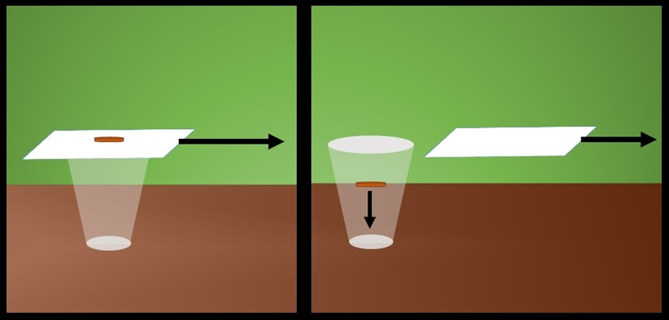
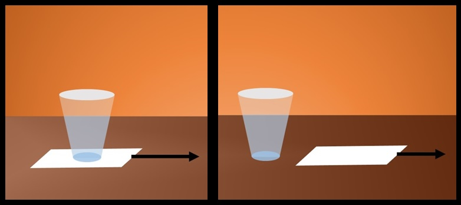
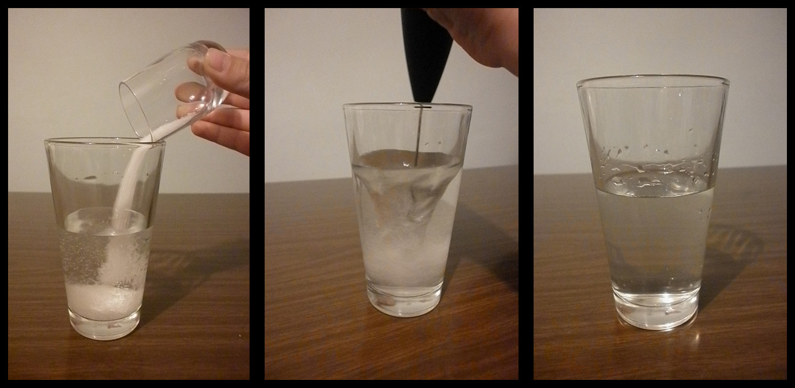
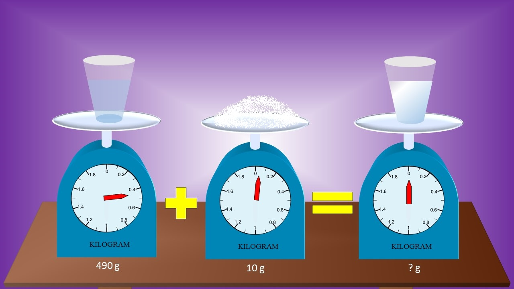

Prisjeti se prvog pokusa "Povlačenje papira - slučaj prazne čaše i novčića" i odgovori na pitanje: nakon što smo naglo povukli papir, zašto je novčić pao u čašu?

Masa novčića jednaka je masi papira.
Novčić ima manju masu od papira.
Novčić ima veću masu od papira.
Papir je bijele boje.
Prisjeti se drugog pokusa "Povlačenje papira - slučaj čaše s vodom" i odgovori na pitanje: zašto se voda u čaši gotovo da i nije pomaknula?

Voda se prolila.
Papir je tromiji od vode.
Nema objašnjenja.
Voda je tromija od papira.
Prisjeti se trećeg pokusa "Otapanje šećera u vodi" i odgovori na pitanje: zbog kojeg zakona je masa otopine jednaka zbroju mase šećera i vode zasebno?

Zakon očuvanja mase.
Zakon gubitka mase.
Zakon stare mase.
Zakon nove mase.
Prisjeti se trećeg pokusa "Otapanje šećera u vodi", pogledaj sljedeću sliku te odgovori na pitanje: koliko će grama iznositi otopina šećera i vode?

490 g.
10 g.
0 g.
500 g.
Sigurno ste na tjelesnom koristili loptu koja se zove medicinka te ju bacali što dalje, ali to nije bilo lako zbog njene mase koja iznosi 1 kg. Također ste se upoznali s odbojkom gdje je masa odbojkaške lopte jednaka 300 g. Biste li mogli igrati odbojku s medicinkom?